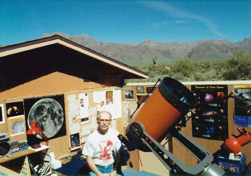

|  |
Rick Davidson has for sale a large astronomy collection including a Celestron C-8 telescope, accessories, eyepieces, CCD accessories, books and charts. Available for purchase as a set or individually. Email to rdavison@ispwest.com
Celestron Refractor GP-C102 with equatorial "Great Polaris" mount. It is basically brand new, I just don't have the room to store it any more. Price new - $1,400, will take $850. Please email to sbrereton@msn.com.